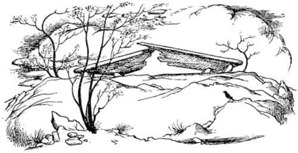

Zamanın Başlangıcı Öncesinden Bir Büyü
Kızlar hâlâ elleri yüzlerinde çalılıklarda çömelmiş durumdayken, Cadı’nın haykırdığını duydular.
“Şimdi! Hepiniz beni takip edin ve bu savaşın geri kalan kısmını bitirelim. Artık büyük aptal, büyük kedi öldüğüne göre, insani yaratıkları ve hainleri ezmemiz fazla zaman almaz.”
Çocuklar o an birkaç saniye için çok büyük tehlike atlattılar. Vahşi bağırtılar, gayda ve tiz boru sesleri eşliğinde, bu iğrenç çapulcuların hepsi tepeden aşağı koşarken, gizlendikleri yerin hemen yanından geçtiler. Hortlakların, yanlarından soğuk bir rüzgâr gibi geçtiklerini ve minotaurların tırısa kalkmış ayakları altında yerin sarsıldığını hissettiler. Havada, dev yarasaların, akbabaların karartılarının ve iğrenç kanatlarının telaşlı çırpınışları sürmekteydi. Başka bir zaman olsa ödleri kopardı ama şimdi Aslan’ın ölümünün verdiği dehşet, utanç ve üzüntü kafalarını öyle doldurmuştu ki korkamıyorlardı bile. Orman yeniden sessizleşir sessizleşmez Susan ve Lucy tepedeki açık alana çıktılar. Ay alçalmış ve önünden ince bulutlar geçmekteydi, ancak hâlâ bağlı olarak yatan Aslan’ın ölü bedenini görebiliyorlardı. İkisi de ıslak çimlerin üzerine diz çöktüler, onun soğuk yüzünü öptüler ve güzel kürkünü – ne kaldıysa – okşadılar ve gözlerinde yaş kalmayıncaya kadar ağladılar. Sonra birbirlerine baktılar, yalnızlıklarından dolayı el ele tutuştular ve yine ağladılar. Sonra yine sessizliğe büründüler. Sonunda Lucy dedi ki:
“Bu iğrenç ağızlığa bakmaya dayanamıyorum. Çıkarabilir miyiz acaba?”
Ve denediler. Uzun süre uğraştıktan sonra (çünkü elleri soğuktu ve gecenin en karanlık zamanıydı) başardılar. Onun yüzünü ağızlıksız gördüklerinde yeniden ağlamaya başladılar, öptüler, okşadılar; kan ve köpükleri ellerinden geldiğince sildiler. Her şey benim anlatabileceğimden daha umutsuz ve korkunçtu.
“Acaba bağlarını da çözebilir miyiz?” dedi Susan az sonra. Fakat düşmanları, salt kinlerinden ötürü ipleri öylesine sıkı bağlamışlardı ki kızlar düğümleri çözemediler.
Umarım bu kitabı okuyanlar Susan ile Lucy’nin o gece olduğu kadar üzgün değildir, fakat öyleyseniz (bütün gece uyanık kalıp gözlerinizde yaş kalmayana kadar ağladıysanız) sonunda bir tür sakinliğin üzerinize çöktüğünü bilirsiniz. Sanki yeniden hiçbir şey olmayacakmış gibi hissedersiniz. Her neyse, ikisinin hissettikleri buydu. Bu ölüm sessizliğinde saatler geçmiş gibi görünüyordu ve onlar havanın gittikçe soğumakta olduğunu fark etmediler. Sonunda Lucy iki değişik şey fark etti: Birincisi, tepenin doğu yakasındaki gökyüzü bir saat öncesine göre daha az karanlıktı. İkincisiyse ayaklarının altındaki çimlerde başlayan hafif hareketlilikti. Önce o bununla hiç ilgilenmedi. Ne fark ederdi ki? Hiç! Fakat sonunda o ‘her neyse’nin Taş Masa’nın taş ayaklarını hareket ettirmeye başladığını gördü. Şimdi de ‘her neyseler’ Aslan’ın vücudunda hareket ediyorlardı. Lucy dikkatle yakından baktı. Bunlar küçük, gri şeylerdi.
“Of!” dedi Susan masanın diğer tarafından. “Ne kadar kötü! Onun her tarafında küçük iğrenç fareler kaynaşıyor. Gidin buradan küçük canavarlar.” Onları korkutmak için elini havaya kaldırdı.
“Bekle!” dedi, hâlâ onlara dikkatle yakından bakmakta olan Lucy. “Ne yaptıklarını görebiliyor musun?”
İki kız da eğilip baktılar.
“İnanıyorum ki—” dedi Susan. “Aa, ne tuhaf! İpleri kemiriyorlar!”
“Ben de öyle düşünmüştüm” dedi Lucy. “Bunlar dost fareler. Zavallı küçük şeyler – onun ölü olduğunu bilmiyorlar. Onu çözmenin bir işe yarayacağını sanıyorlar.”
Artık ortalık enikonu aydınlanmıştı. Kızlar ilk kez birbirlerinin soluk yüzlerini gördüler. Düzinelerce ve hatta yüzlerce tarla faresinin ipleri kemirişini görebiliyorlardı. Sonunda iplerin hepsi birer birer çözüldü.
Doğuda gökyüzü artık ağarmış, yıldızlar solgunlaşmıştı – sadece ufkun üzerinde alçakta duran birisi dışında. Hava bütün gece olduğundan daha soğuktu. Fareler uzaklaşmışlardı.
Kızlar kemirilmiş ip artıklarını temizlediler. Aslan ipler olmaksızın daha iyi görünüyordu. Ortalık aydınlandıkça, Aslan’ın yüzü daha da soylu görünüyordu.
Arkalarındaki ağaçlarda bir kuş tıkırtıya benzer bir ses çıkardı. Saatlerdir öylesine bir sessizlik vardı ki bu onları ürkütmüştü. Sonra başka bir kuş onu cevapladı. Az sonra her yer şarkı söyleyen kuşlarla doluydu.
Artık sabah olmuştu.
“Çok üşüyorum” dedi Lucy.
“Ben de” dedi Susan, “Biraz yürüyelim.”
Tepenin doğu kenarına yürüdüler ve aşağı baktılar. O tek büyük yıldız neredeyse kaybolmak üzereydi. Tüm ülke koyu gri bir renge bürünmüştü. Ötelerde, karanın bittiği yerde denizin rengi de solmuştu. Gökyüzü kızarmaya başlamıştı. Isınabilmek için ölü Aslan’la tepenin kenarı arasında sayısız kez ileri geri yürüdüler. Öylesine yoruldular ki sonunda denize ve Cair Paravel’e doğru bakmak için durdular. O an gökyüzü, denizle buluştuğu ufuk çizgisi boyunca kızıldan altın rengine dönüştü ve güneş yavaş yavaş kendini göstermeye başladı. Aynı anda arkalarından güçlü bir ses duydular – sanki bir devin yemek tabağını kırması gibi, güçlü bir çatırtı ve sağır edici bir sesti.
“Bu da ne” dedi Lucy, Susan’ın kolunu kavrayarak.
“Ben – ben geriye dönmeye korkuyorum” dedi Susan, “korkunç bir şey oluyor.”
“Ona daha da kötü bir şey yapıyorlar” dedi Lucy. “Haydi!” Ve Susan’ı da beraberinde çekerek döndü.
Güneşin yükselişi her şeyi o kadar etkilemişti ki – tüm renkler ve gölgeler değişmişti – bir an için, önemli bir şeyi fark etmediler. Sonra gördüler. Taş Masa boydan boya çatlamış, kırılmış ve Aslan yok olmuştu.
“Ah, ah, ah” diye bağırdı kızlar masaya koşarak.
“Ah, bu çok kötü” diye hıçkırdı Lucy, “Hiç olmazsa yalnız bıraksalardı.”
“Kim yaptı bunu?” diye bağırdı Susan. “Bunun anlamı ne? Yine büyü mü?”

“Evet!” dedi ulu bir ses arkalarından. “Bir büyü daha.” Etraflarına bakındılar. Orada, güneşin doğuşuyla parlayan, daha önce gördüklerinden daha da büyük, yelesini sallayan (görüldüğü kadarıyla yeniden uzamıştı) Aslan durmaktaydı.
“Ah, Aslan!” diye bağırdı çocuklar ona bakarak; memnun oldukları kadar da korkmuşlardı.
“Sen ölmedin mi o zaman, sevgili Aslan?” diye sordu Lucy.
“Artık ölü değilim” dedi Aslan.
“Yoksa sen bir?..” diye sordu Susan titrek bir sesle. Hayalet sözcüğü bir türlü ağzından çıkmamıştı. Aslan altın renkli başını eğerek alnını yaladı. Nefesinin sıcaklığı ve tüylerinde her zaman bulunan o baygın koku Susan’ın her yanını kapladı.
“Öyle görünüyor muyum?” dedi Aslan.
“Ah, sen yaşıyorsun, sen yaşıyorsun! Ah, Aslan!” diye bağırdı Lucy ve iki kız da atılıp onu öpücüklere boğdular.
“Peki, bütün bunlar ne anlama geliyor?” diye sordu Susan.
“Demek oluyor ki” dedi Aslan, “Cadı Güçlü Büyü’yü biliyor ama onun bilmediği çok güçlü bir büyü daha var. Onun bilgisi sadece zamanın başlangıcına kadar gider. Fakat biraz daha geriye, zaman başlamadan önceki durgunluğa ve karanlığa bakabilseydi, orada değişik bir büyü bulabilirdi. Bir hainin yerine, hiç ihanet etmemiş biri kendi isteğiyle kurban edilirse, masanın kırılacağını ve ölümün tersine doğru işlemeye başlayacağını bilirdi. Ve şimdi—”
“Evet. Şimdi?” dedi Lucy, havaya sıçrayıp ellerini çırparak.
“Çocuklar” dedi Aslan, “gücümün geri geldiğini hissediyorum. Ah, çocuklar tutabilirseniz tutun beni!” Gözleri parıldayarak, vücudu titreşerek ve kuyruğuyla kendini kırbaçlayarak bir an durdu. Sonra başlarının üzerinden müthiş bir sıçramayla masanın öbür yanına atladı. Lucy neden olduğunu bilmeden gülerek, onu yakalamak için masanın üzerine tırmandı. Aslan yeniden sıçradı. Delice bir kovalamaca başladı. Tepenin etrafında döne döne koşturdu onları; bazen umutsuzca ulaşamayacakları biçimde, bazen neredeyse kuyruğunu yakalayacak kadar yakına sokulmalarına izin vererek, bazen onların aralarına dalarak, bazen devasa ve kadife gibi pençeleriyle onları havaya fırlatıp yeniden yakalayarak ve bazen de beklenmedik bir anda durup üçünün hep birlikte mutlu ve gülen bir kürk, kol ve bacak yığını haline gelmesine neden olarak koşturdu. Öyle bir oyundu ki Narnia’dakiler dışında kimse oynamamıştır ve Lucy, şimşeklerin çaktığı bir fırtınayla mı, yoksa bir kedi yavrusuyla mı oynadığına bir türlü karar veremedi. Tuhaf olan, sonunda üçü de güneşte soluk soluğa yere uzandıklarında, kızlar artık en küçük bir yorgunluk, açlık ya da susuzluk hissetmiyorlardı.
“Şimdi” dedi Aslan biraz sonra, “işimize gelelim. Kükreyeceğimi hissediyorum. Parmaklarınızla kulaklarınızı kapasanız iyi olur.”
Kızlar kulaklarını kapadılar. Aslan ayağa kalktı ve kükremek için ağzını açtığında yüzü o kadar korkunçlaştı ki bakmaya cesaret edemediler. Önündeki tüm ağaçlar aynı çayırdaki otların rüzgârda eğilmesi gibi, kükreyişinin gürültüsüyle eğildi. Aslan daha sonra:
“Kat edecek uzun bir yolumuz var. Sırtıma binmeniz gerekiyor” dedi. Ardından çömeldi ve çocuklar onun sıcak ve altın rengi sırtına tırmandılar. Susan sıkıca Aslan’ın yelesine yapışarak öne, Lucy ise sıkıca Susan’a tutunarak arkaya oturdu. Aslan büyük bir güçle altlarında yükseldi, sonra da tepeden aşağı, ormanın sık ağaçlarına doğru bir mermi gibi fırladı.
Bu yolculuk, Narnia’da onların başına gelen en harika şeydi belki. Hiç dörtnala giden bir ata bindiniz mi? Onu aklınıza getirin; sonra toynakların çıkardığı güçlü sesler ve koşum takımlarının şıngırtısı yerine iri pençelerin sessizce koşuşunu hayal edin. Sonra, atın siyah, gri ya da kestane rengi sırtı yerine altın renkli kürkün yumuşak kabalığını ve rüzgârda geriye doğru uçuşan yeleyi düşünün. Ve en hızlı yarış atından iki kez daha hızlı gittiğinizi hayal edin. Bu binek hayvanının yönlendirilmeye ihtiyacı yoktur ve hiç yorulmaz. Adımlarını hiç şaşırmaksızın, çekinmeden, ağaçlar arasında yolunu büyük bir ustalıkla bularak, çalılık ve fundalıkların, küçük derelerin üzerinden atlayarak, büyücek olanların içinde yürüyerek ve en büyüklerinde yüzerek koşar da koşar. Üstelik siz, ne parkta, ne yolda, ne de çayırlardasınız; baharda Narnia topraklarında, kayın ağaçlarıyla kaplı heybetli yollardan aşağı, meşelerin çevrelediği güneşlik alanlardan, kar beyazı kiraz ağacı bahçelerinin içinden, gürüldeyen çağlayanlardan, yosunlu kayalıklardan, seslerin yansıdığı mağaralardan geçerek, katırtırnağına benzeyen çalılıkların kapladığı rüzgârlı bayırlara tırmanarak, fundalıklarla dolu dağların eteklerinden, baş döndürücü dağ sırtları boyunca aşağıdaki vahşi vadilere ve vadiden dışarıya mavi çiçeklerin kapladığı dönümlerce tarlalara doğru koşturuyorsunuz.
Bir tepenin yamacından, uzun kulelerden oluşmuş gibi görünen bir kaleyi – durdukları yerden, sanki oyuncak bir kaleymiş gibi görünüyordu – gördüklerinde neredeyse öğlen oluyordu. Fakat Aslan öyle hızlı koşuyordu ki, kale her an gözlerinin önünde büyüyordu. Daha ne olduğunu kendilerine sormaya bile fırsat bulamadan kalenin bulunduğu düzlüğe inmişlerdi bile. Artık oyuncak bir kale gibi görünmüyordu. Hemen önlerinde ürkütücü bir şekilde yükseliyordu. Burçlarda kimseler görünmüyordu ve kapılar sımsıkı kapalıydı. Aslan hızını kesmeden dosdoğru, mermi gibi kaleye saldırdı.
“Cadı’nın evi!” diye bağırdı. “Şimdi sıkı tutunun çocuklar!”
Göz açıp kapayıncaya kadar tüm dünya altüst olmuş gibi göründü çocuklara. Sanki içleri dışlarına çıkmıştı. Çünkü Aslan şimdiye kadar yaptığından daha da büyük bir hamleyle (buna, atlamadan daha çok uçma denilebilir) kalenin duvarları üzerinden atlamıştı. Kızlar kendilerini heykellerle dolu taş bir avlunun ortasında, nefes nefese ama kıllarına zarar gelmeden, Aslan’ın sırtından yuvarlanırken buldular.